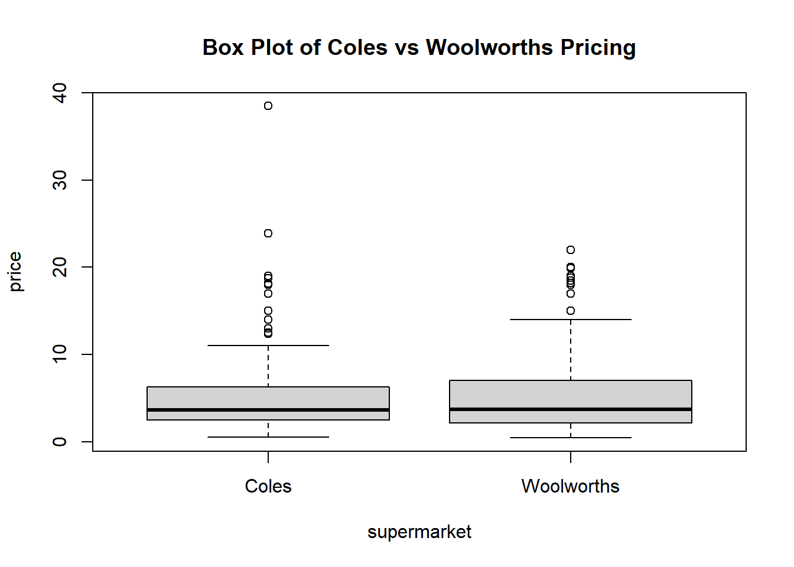
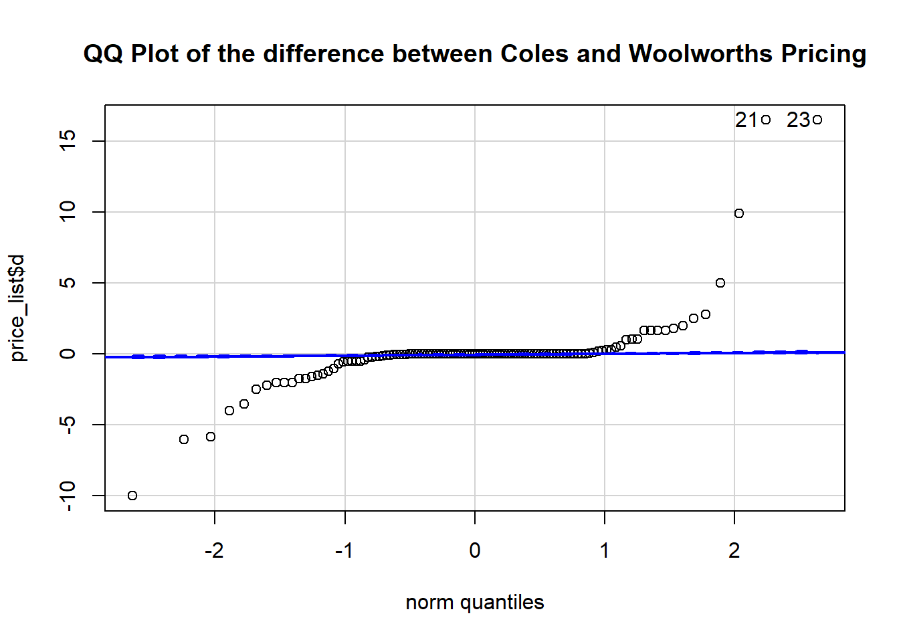
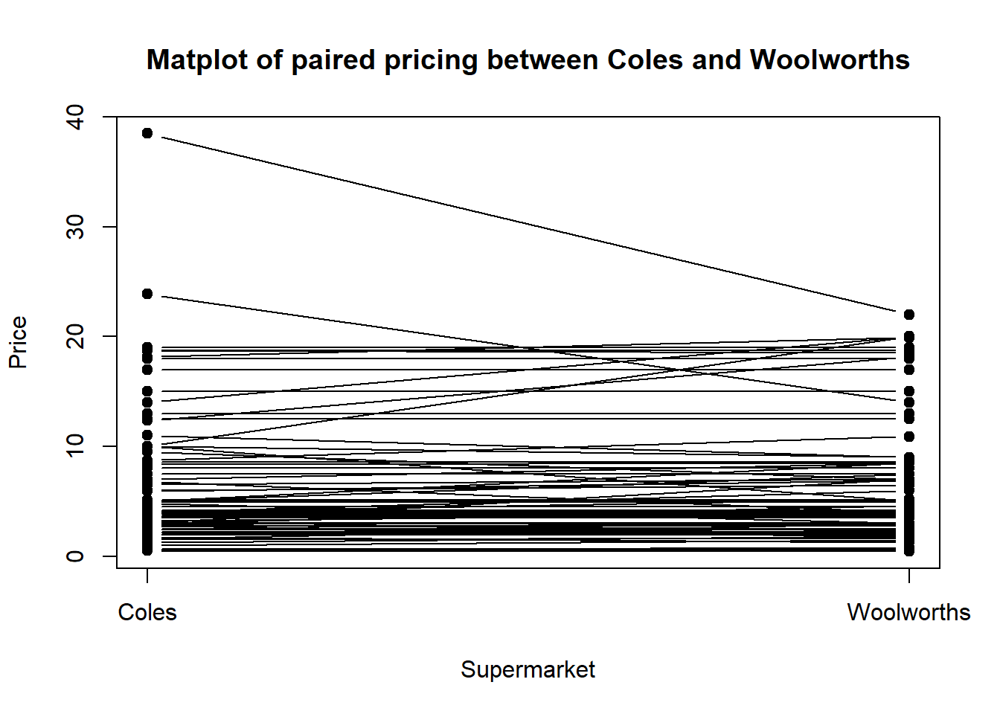
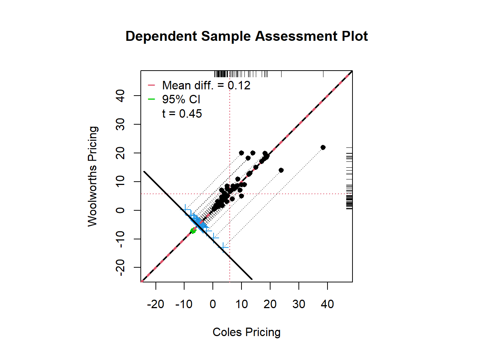

The aim of this report was to investigate whether Coles or Woolworths is cheaper. We have used their online website to collect pricing of matched products in a side-by-side manner. We selected 119 sample products randomly across different category [Cluster sampling method], such as beverage, veggies, fruits, dairy and cleaning products.
We then compared the means of these exactly same sample products from two different supermarkets. We performed a paired sample t-test to determine if there is any statistically significant difference between prices in Coles and Woolworths. Variables of the data we collected were Items (item name),Coles(price at Coles),Woolworths(price at Woolworths). Our findings showed that there is no statistically significant difference between the means of pricing for the same sample products from Coles and Woolworths. Therefore, we can conclude that the products at Coles and Woolworths are comparable and not cheaper to each others.
The chosen products were needed to comply with a set of guidelines where the products were: the same brand, the same quantity (e.g. by weight or volume), at standard price (e.g. not on special).Read in our side by side price list, which we have simply recorded down the product name in first column, Coles pricing of this particular product in the second column, and Woolworth pricing of the exactly same product in the third column. All the pricing were collected between 11th to 16th of September 2019.
rm(list=ls())
price_list <- read_csv("src/R/stats/price_list.csv")
head(price_list)## # A tibble: 6 x 3
## Items Coles Woolworths
## <chr> <dbl> <dbl>
## 1 A2 Full Cream Milk 2L 5 5
## 2 Apple & Blackcurrant Juice 2L 2 2
## 3 Apple & Mango Juice 2L 2 2
## 4 Apple Juice 2L 2 2
## 5 Avocados ea 2.5 2.2
## 6 Baby Spinach Prepacked 60g 2 2#Summary Statistics of Coles price list
price_list %>% summarise(Min = min(Coles,na.rm = TRUE),
Q1 = quantile(Coles, probs = .25,na.rm = TRUE),
Median = median(Coles, na.rm = TRUE),
Q3 = quantile(Coles,probs = .75,na.rm = TRUE),
IQR = IQR(Coles, na.rm=TRUE),
Max = max(Coles,na.rm = TRUE),
Mean = mean(Coles, na.rm = TRUE),
SD = sd(Coles, na.rm = TRUE)
)## # A tibble: 1 x 8
## Min Q1 Median Q3 IQR Max Mean SD
## <dbl> <dbl> <dbl> <dbl> <dbl> <dbl> <dbl> <dbl>
## 1 0.5 2.5 3.65 6.25 3.75 38.5 5.90 6.48#Summary Statistics of Woolworths price list
price_list %>% summarise(Min = min(Woolworths,na.rm = TRUE),
Q1 = quantile(Woolworths, probs = .25,na.rm = TRUE),
Median = median(Woolworths, na.rm = TRUE),
Q3 = quantile(Woolworths,probs = .75,na.rm = TRUE),
IQR = IQR(Woolworths, na.rm=TRUE),
Max = max(Woolworths,na.rm = TRUE),
Mean = mean(Woolworths, na.rm = TRUE),
SD = sd(Woolworths, na.rm = TRUE)
)## # A tibble: 1 x 8
## Min Q1 Median Q3 IQR Max Mean SD
## <dbl> <dbl> <dbl> <dbl> <dbl> <dbl> <dbl> <dbl>
## 1 0.43 2.15 3.7 7 4.85 22 5.78 5.53#Side by side boxplot to visualise the two distributions
price <- price_list %>% gather(supermarket, price, 2:3)
price$supermarket <- price$supermarket %>% factor(levels = c("Coles","Woolworths"))
cwbox <- boxplot(price ~ supermarket, data = price,main="Box Plot of Coles vs Woolworths Pricing")
cwbox$out## [1] 18.15 38.50 18.15 38.50 15.00 14.00 18.00 18.00 23.90 18.75 17.00 18.75
## [13] 19.00 13.00 12.35 12.50 19.90 22.00 19.90 22.00 15.00 20.00 18.00 18.00
## [25] 18.82 17.00 18.50 19.99 19.00 18.20cwbox$group## [1] 1 1 1 1 1 1 1 1 1 1 1 1 1 1 1 1 2 2 2 2 2 2 2 2 2 2 2 2 2 2Coles prices seem to be more than Woolworths, according to the descriptive statistics. As the collected samples are imperfect representation of the true population, we need to investigate the significant level which represents the minimum probability on Type I or Type II errors when rejecting or failing to reject our hypothesis. Our selected sample from Coles are coupled to the selected sample from Woolworths (or vice versa), thus we are using the paired sample t-test to perform the investigation.
#Add a price difference column to the price_list data frame
price_list <- price_list %>% mutate(d = Coles - Woolworths)
#Descriptive Statistics for the mean price difference
price_list %>% summarise(Min = min(d,na.rm = TRUE),
Q1 = quantile(d, probs = .25,na.rm = TRUE),
Median = median(d, na.rm = TRUE),
Q3 = quantile(d,probs = .75,na.rm = TRUE),
IQR = IQR(d, na.rm=TRUE),
Max = max(d,na.rm = TRUE),
Mean = mean(d, na.rm = TRUE),
SD = sd(d, na.rm = TRUE)
)## # A tibble: 1 x 8
## Min Q1 Median Q3 IQR Max Mean SD
## <dbl> <dbl> <dbl> <dbl> <dbl> <dbl> <dbl> <dbl>
## 1 -9.99 -0.0850 0 0 0.0850 16.5 0.117 2.82# Use QQplot to check for normality of the differences
qqPlot(price_list$d, dist="norm", main="QQ Plot of the difference between Coles and Woolworths Pricing")
## [1] 21 23From the above QQPlot, we could notice the price difference of the random sample we drawn from both supermarkets might not fit well to normal distribution. However, based on Central Limit Theorem, distribution of the sample mean of differences will be approximately normally distributed, regardless of the underlying population distribution when the sample size is large (i.e. n>30). Since our sample size is 119, we can effectively ignore the issue with normality for the price difference of the sample data from both supermarkets and proceed with the paired sample t-test.
Paired sample t-test was used to determine which supermarket is the cheapest.
\(H_0: \mu_\Delta=0\)
\(H_A: \mu_\Delta\neq0\)
where \(\mu_\Delta\) represents population mean price difference of Coles and Woolworths products
#Perform paired sample t-test as below:
t.test(price_list$Coles, price_list$Woolworths, paired = TRUE, alternative = "two.sided" )##
## Paired t-test
##
## data: price_list$Coles and price_list$Woolworths
## t = 0.45318, df = 118, p-value = 0.6513
## alternative hypothesis: true difference in means is not equal to 0
## 95 percent confidence interval:
## -0.3953052 0.6299271
## sample estimates:
## mean of the differences
## 0.1173109#Which is equivalent to a one-sample t-test of the mean difference with mu = 0.
t.test(price_list$d, mu = 0, alternative = "two.sided")##
## One Sample t-test
##
## data: price_list$d
## t = 0.45318, df = 118, p-value = 0.6513
## alternative hypothesis: true mean is not equal to 0
## 95 percent confidence interval:
## -0.3953052 0.6299271
## sample estimates:
## mean of x
## 0.1173109Degrees of freedom are 118 (i.e 119-1)
#The critical value t* for the paired t-test assuming a two tailed test with alpha=0.05
qt(p = 0.025, df = 119-1)## [1] -1.980272#Visualizations
# matplot - a line plot where each line represents the paired pricing of the same selected product.
matplot(t(data.frame(price_list$Coles, price_list$Woolworths)),
type = "b",
pch = 19,
col = 1,
lty = 1,
xlab = "Supermarket",
ylab = "Price",
xaxt = "n",
main = "Matplot of paired pricing between Coles and Woolworths"
)
axis(1, at = 1:2, labels = c("Coles", "Woolworths"))
#granova.ds - a scatter plot that reports the mean difference and confidence intervals from the paired samples t-test, and also the correlation between pricing from coles and woolworths.
granova.ds(
data.frame(price_list$Coles, price_list$Woolworths),
xlab = "Coles Pricing",
ylab = "Woolworths Pricing"
)
## Summary Stats
## n 119.000
## mean(x) 5.900
## mean(y) 5.783
## mean(D=x-y) 0.117
## SD(D) 2.824
## ES(D) 0.042
## r(x,y) 0.901
## r(x+y,d) 0.346
## LL 95%CI -0.395
## UL 95%CI 0.630
## t(D-bar) 0.453
## df.t 118.000
## pval.t 0.651The t∗ values are ±1.98. Since t=0.45 is not falling on the rejection region, we fail to reject \(H_0\). The results of the paired hypothesis test are not statistically significant.
The p-value is 0.65.As p >.05, we fail to reject \(H_0\). There was no statistically significant mean difference in the prices between Coles and Woolworths.
The 95% CI of the mean difference is found to be [-0.3953052,0.6299271]. As the 95% CI does capture \(H_0\), we fail to reject it.
A paired sample t-test was used to test for a significant difference between the means of pricing for the same sample products from Coles and Woolworths. The difference in pricing for these randomly selected products exhibited evidence of non-normality upon inspection of the normal Q-Q plot for both supermarkets, the central limit theorem ensured that the t-test could be applied due to the large sample size, n = 119, in each group. The results of the paired t-test failed to find statistically significant evidence that there would be difference in the means of the population pricing between Coles and Woolworths despite discovering a difference in the means of the sample dataset. The paired t-test found, t(df=118)=0.45, p=0.65, 95% CI [-0.3953052,0.6299271]. The results of the investigation suggest that both supermarkets are not cheaper to each other.
From the findings of our investigation we can conclude that there is no statistically significant mean difference between the prices of Coles and Woolworths. The strengths of our investigation would be having a good sample size (n>30) and having a set of guidelines (same brand, same weight etc.) while collecting data. However, there might have been certain limitations like human error during data collection and data entry.
To overcome the limitations, we could possibly increase the sample size in our research.
We also noticed there are numbers of outliers when we compared the pricing from both supermarkets using the box plot, when we examined closer to the data, the outliers belong to products at higher price range. This reflects sensibly to the pricing distribution in supermarket, as most of the consumable items are less than 10 dollars, with a small number of high-end products, such as meat, seafood or even bulk-buy valued pack. In our research, we didn’t remove the outliers, as these data resemble the true population, and the proportion would not affect our results. However the research would be more comprehensive, if we can broaden our collections and compare various sample sets to see if there would be any difference in sampling high price range products and draw different conclusions.
It would be very interesting, if we could extend our research to different product category, comparing the same set of products across certain time period, or even examine the price difference targeting various types of consumers (e.g. gluten-free vs common dietary, house-brand vs non-house-brand lovers). The research question can roll on extensively base on the above preliminary findings.